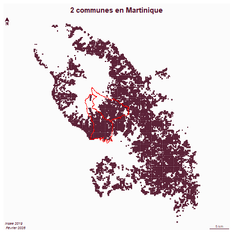
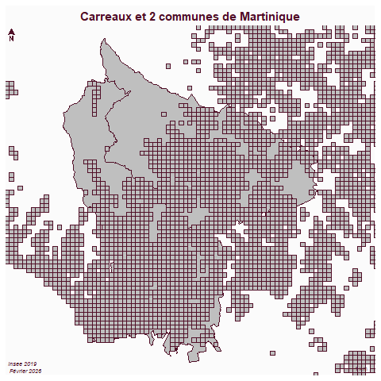
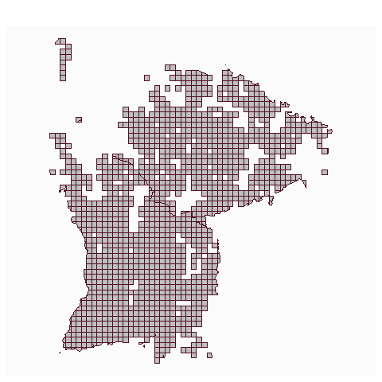
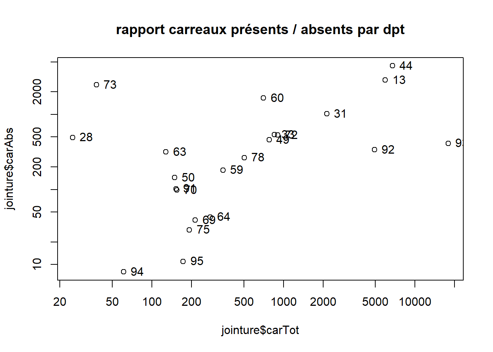

Code
choix <- read.table("data/choix.csv", fileEncoding = "UTF-8")
choix <- as.vector(choix$V1)Préparation des fichiers
pb JSON to GEOJSON
à la main car pas de librairie simple trouvée et format=geojson ne fonctionne pas
https://geo.api.gouv.fr/communes?code=93010&fields=code,nom&format=geojson$geometry=contour
On déconstruit et on reconstruit X Y multipoint / poly / sf
# modele : https://geo.api.gouv.fr/communes?code=93010&fields=code,nom,contour
library(sf)
library(httr2)
df <- NULL
pb <- NULL
for (c in choix){
print(c)
url <- paste0("https://geo.api.gouv.fr/communes?code=", c, "&fields=code,nom,contour")
rqt <- request(url)
rep <- req_perform(rqt)
data <- resp_body_json(rep)
if (length(data)!=0) {
# on extrati pas à pas
#code <- c
nom <- unlist(data [[1]][2])
data <- data [[1]][3]
data <- data[[1]][2]
data <- data [[1]][1]
data <- unlist(data)
Y <- data [c(seq(2,length(data), by = 2))]
X <- data [c(seq(1,length(data)-1, by = 2))]
pts <- NULL
for (ind in c(1:length(X))){
tmp <- c(X [ind],Y[ind])
pts <- rbind(tmp, pts)
}
mp <- st_multipoint(pts)
poly <- st_cast(mp,"POLYGON")
dfTMP <- st_as_sf(data.frame(code=c, nom=nom, geom=st_sfc(poly)))
df <- rbind(dfTMP,df)
}else{
pb <- c(c,pb)
}
}
pb
dfHorsMart <- df [substring(df$code,1,2)!=97,]
library(mapsf)
mf_map(dfHorsMart)
st_crs (df) <- 4326
df <- st_transform(df,2154)cas 19e
commune <- st_read("data/cours5.gpkg", "commune", quiet = T)
intersecterLimite <- function(commune){
car <- st_read("data/gros/construction.gpkg", unique(commune$dpt), quiet = T)
limite <- st_cast(st_geometry(commune), "MULTILINESTRING")
# afin de récupérer toute la géométrie du carré
car$intersecte <- sapply(st_intersects(car,limite ), length)
inter <- car [car$intersecte>0,]
}
res <- NULL
insee <- commune$code
insee <- insee [-grep("^97",insee)]
for (i in insee){
c <- commune [commune$code == i,]
tmp <- intersecterLimite(c)
res <- rbind(tmp, res)
}
st_write(res, "data/cours3.gpkg", "carLimite", delete_layer = T, quiet = T)Pour le 97


Intersection lg carreaux pour Martiniquecommune <- st_read("data/cours5.gpkg", "commune", quiet = T)
commune <- commune [-grep("97", commune$dpt),]
dpt <- commune$dpt
# intersections
inter <- NULL
for (d in dpt){
car <- st_read("data/gros/construction.gpkg", d, quiet=T)
interTMP <- st_intersection(car, commune)
inter <- rbind(interTMP, inter)
}
st_write(inter, "data/cours5.gpkg", "car", delete_layer = T, quiet = T)Martinique
commune <- st_read("data/cours5.gpkg", "commune", quiet = T)
commune <- commune [grep("97", commune$dpt),]
car <- st_read("data/gros/construction.gpkg", unique(commune$dpt), quiet=T)
st_crs(car)
commune <- st_transform(commune, 5490)
inter <- st_intersection(car, commune)
st_write(inter, "data/cours5.gpkg", "car97", delete_layer = T, quiet = T)
# fichiers cours 3uniquement men_pauv et recodage une couche par commune
on charge le 93 on affiche osm on charge commune on sélectionne et on crée une nelle couche on découpe car par commune on décoche les couches
On fait le rapport carreaux manquants / carreaux présents par dpt
Linking to GEOS 3.13.1, GDAL 3.11.4, PROJ 9.7.0; sf_use_s2() is TRUEDriver: GPKG
Available layers:
layer_name geometry_type features fields crs_name
1 commune Polygon 43 3 RGF93 v1 / Lambert-93
2 car 43259 38 RGF93 v1 / Lambert-93
3 car97 1383 37 RGAF09 / UTM zone 20N
4 carreau_manquant 42 2 RGF93 v1 / Lambert-93
5 carreau_manquant97 Polygon 115 2 RGAF09 / UTM zone 20N
6 tampon 3 2 RGF93 v1 / Lambert-93Simple feature collection with 1 feature and 1 field
Geometry type: MULTIPOLYGON
Dimension: XY
Bounding box: xmin: 661159.8 ymin: 6865435 xmax: 662752.6 ymax: 6868556
Projected CRS: RGF93 v1 / Lambert-93
nb geom
7 7.430778 [m^2] MULTIPOLYGON (((661924.3 68...udunits database from C:/Users/bmaranget/AppData/Local/Programs/R/R-4.5.2/library/units/share/udunits/udunits2.xml[1] 38.05451# plus du tiers des carreaux absents
diff$dpt <- substring(diff$code,1,2)
aggDiff <- aggregate(diff [,c("nb"), drop=T], by = list(diff$dpt), sum)
names(aggDiff) <- c("dpt", "nb")
jointure <- merge(carDpt, aggDiff, by = "dpt", all.x = T, all.y=T)
names(jointure) <- c("dpt", "carTot", "carAbs")
jointure$rapport <- (round((jointure$carAbs)/(jointure$carTot),2))*100
Tous les dpts au dessus de la droite de régression ont plus de carreaux absents que de carreaux totaux.
st_layers("data/cours5.gpkg")
couches <- st_layers("data/cours5.gpkg")
couches <- couches$name
couches
couche <- couches [c(2:6)]
for (c in couche){
tmp <- st_read("data/cours5.gpkg", c, quiet=T)
st_write(tmp, "data/base.gpkg", c, delete_layer=T, quiet=T)
}
st_layers("data/base.gpkg")
# reprise pour cours 7
commune <- st_read("data/cours5.gpkg", "commune")
st_write (commune, "data/cours7.gpkg", "commune")Verif nb de dpts
On récupère, dézippe et lit la donnée sous R
Il en manque 2
# on agrège les carreaux par dpt
car$dpt <- substring(car$lcog_geo,1,2)
aggCar <- aggregate(car [, c( "dpt")], by = list(car$dpt), length)
# même opération sur les communes
aggCommune <- aggregate(commune [, "code_dep"], by=list(commune$code_dep), length)
names(aggCar)[1:2] <- c("dpt", "nb")
names(aggCommune)[1:2] <- c("dpt", "nb")
diff <- NULL
commune <- commune[commune$code_dep != 97,]
dpt <- unique(commune$code_dep)
st_crs(aggCar)
st_crs(aggCommune)
aggCommune <- st_transform(aggCommune, 2154)
commune <- st_transform(commune, 2154)
for (d in dpt){
print(d)
tmp <- st_difference(aggCommune [aggCommune$dpt == d, c("dpt")], aggCar [aggCar$dpt == d, c("dpt")])
diff <- rbind(tmp, diff)
}